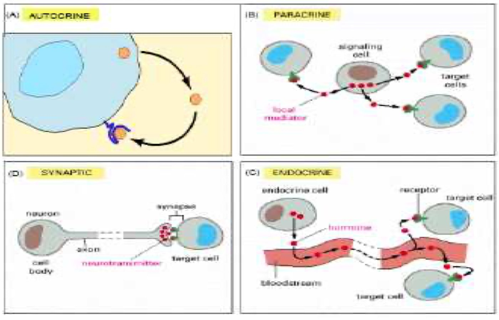
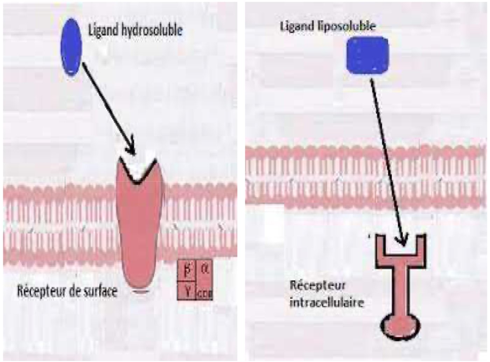
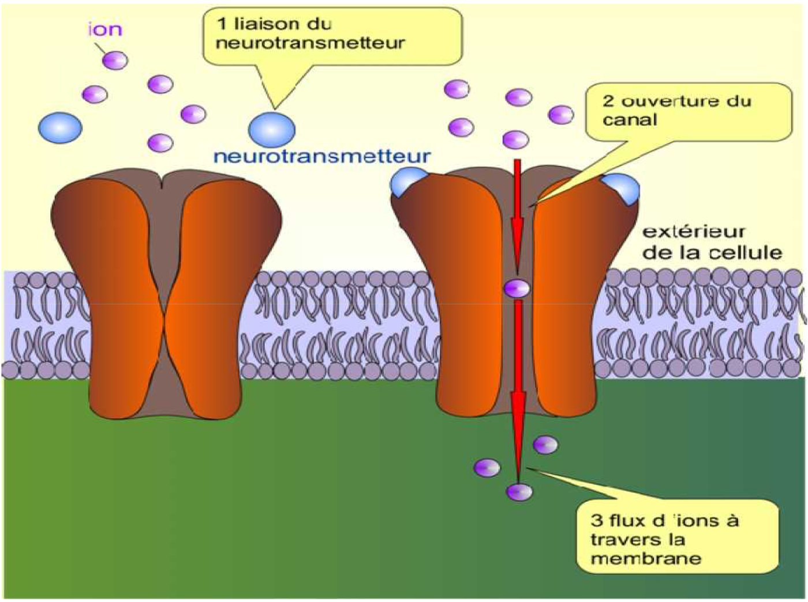
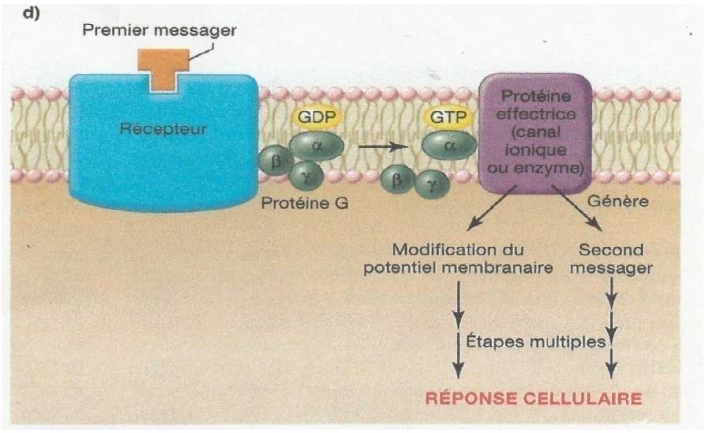
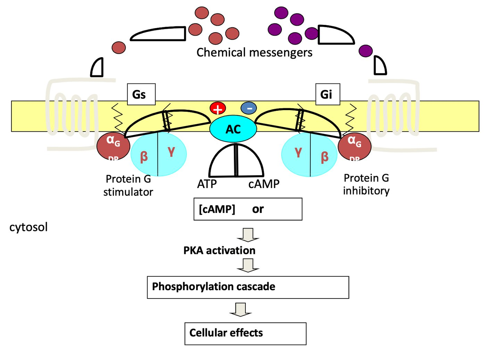
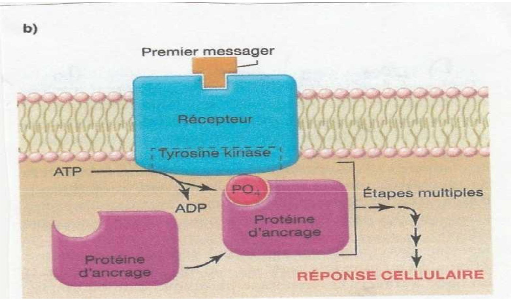
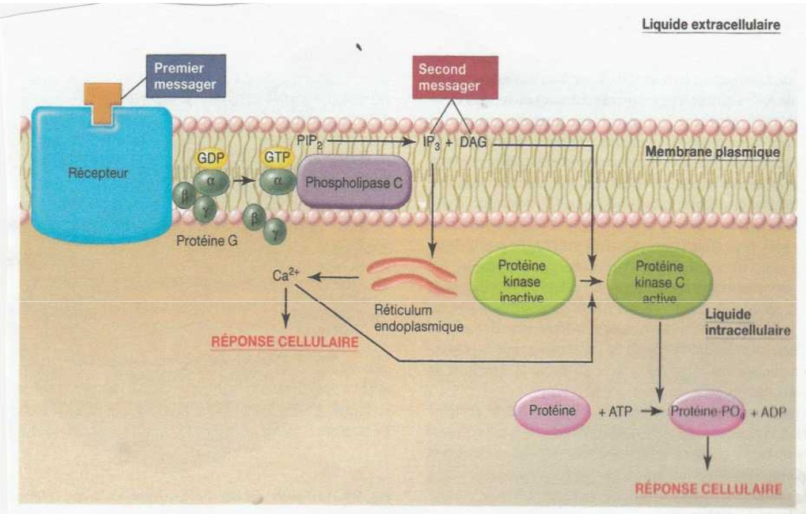
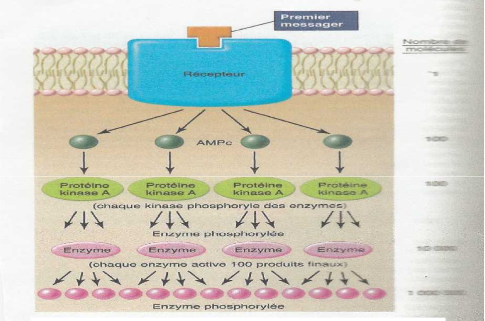

S1 · Physiology · Summary
Ligand-receptor interactions
- Essentials
- Communication modes
- 3 phases
- Ligands & receptors
- Mechanisms
- Second messengers
- Exam traps
- Self-check
If you remember only this
- Ligand = chemical messenger that binds a receptor (a protein with a binding site). The binding starts signal transduction: chemical signal → biological response.
- Indirect signaling has 4 types: neurocrine (synaptic), endocrine (acts at a distance, via blood), paracrine and autocrine (both limited in time and space).
- Lipid-soluble ligands (steroids, thyroid hormones, vitamin D) cross the membrane → intracellular receptors (cytosolic or nuclear) → act on gene transcription.
- Hydrophilic ligands (neurotransmitters, peptide hormones, growth factors) can't cross → membrane receptors: channel, G-protein-coupled (GPCR), enzyme (tyrosine kinase).
- GPCR: G protein = α + β + γ; α carries GDP/GTP. Ligand → GDP swapped for GTP → α-GTP leaves βγ → effectors. αs stimulates, αi inhibits adenylate cyclase. >50% of drugs target GPCRs.
- Second messengers are small molecules made inside the cell (cAMP, cGMP, IP3, DAG, Ca²⁺) that relay the signal to the cytosol and amplify it.
I. Introduction p. 3
- Communication by chemical messengers is essential in multicellular organisms to regulate organ function and maintain homeostasis.
- Intercellular or intracellular chemical messengers = ligands.
- Ligand + receptor → a series of events that turns the chemical signal into a biological response = signal transduction.
II. Modes of intercellular communication p. 4–6 2022-23
a) Direct communication — physical contact between cells
| Means | What it does |
|---|---|
| Gap junctions (communicating junctions) | Transmembrane proteins forming ionic channels: small molecules and ions pass directly from one cell to the next. |
| Nanotubules | Pass signal molecules and even organelles (e.g. mitochondria). |
| Surface markers | Cell-to-cell interactions through specific markers on cell surfaces — especially the immune system. |
| Adhesions | — |
b) Indirect communication — by signaling molecules (ligands): 4 types
| Type | Messenger | Where it acts |
|---|---|---|
| Neurocrine (synaptic) | Neurotransmitter or neurohormone, secreted by nerve cells | Postsynaptic receptors of cells right next to it, at the synapse (neuro-neuronal, neuro-effector) |
| Endocrine | Hormone from an endocrine cell | Carried in the circulation → acts at a distance on target cells |
| Paracrine | Local chemical mediators, neurotransmitters | Neighbouring cells — limited in time and space |
| Autocrine | Molecule made by the cell itself | The same cell that produced it — limited in time and space |

Memory trick
Auto = self · Para = beside · Endo = into the blood (far away) · Neuro = across the synapse.
Only endocrine acts at a distance.
III. The 3 phases of intercellular communication p. 7
- Reception — the ligand is detected, recognised and binds its specific receptor.
- Transduction — the signal is converted into a cellular response, usually through a cascade of intermediate molecules (the transduction pathway).
- Cellular response — 3 kinds of change:
- membrane permeability to ions and water,
- enzyme activity at the surface and inside the cell,
- transcriptional activity (gene expression).
IV. Ligands and receptors p. 8–12 2022-23 · 2023-24 · 2024-25 · 2025-26
Definitions
Ligand = signaling molecule that binds a receptor to induce a cellular response.
Receptor = protein with a binding site for the ligand, located in the cell (cytosol or nucleus) or in the plasma membrane.
| Lipid-soluble ligands | Hydrophilic ligands | |
|---|---|---|
| Membrane | Diffuse across it | Cannot cross it |
| Receptor | Intracellular: cytosolic or nuclear | Membrane receptors |
| Examples | Steroid hormones = cholesterol derivatives (cortisol, aldosterone, estrogen, progesterone, testosterone); thyroid hormones (from the amino acid tyrosine, thyroid gland); vitamin D | Neurotransmitters (noradrenaline, acetylcholine, serotonin…), peptide hormones, growth factors |
| Main effect | Gene transcription → new protein | Ion flow, G protein, enzyme activation |

V. Ligand-receptor interaction mechanisms p. 13–22 2022-23 · 2024-25
| Receptor | Structure | Transduction | Example |
|---|---|---|---|
| Channel (ionotropic) | Transmembrane channel protein with ligand binding sites | Ligand changes the channel's conformation → permeable to certain ions | Nicotinic acetylcholine receptor |
| GPCR | Receptor linked to a G protein α (αs / αi), β, γ | G protein → effector (enzyme or channel) → second messengers | Adrenaline receptor, muscarinic acetylcholine receptor |
| Enzyme (tyrosine kinase) | Single polypeptides (monomers): extracellular binding site + cytoplasmic tyrosine kinase | Ligand → dimerization → tyrosine kinases phosphorylated (ATP) → intracellular proteins | Insulin |
| Intracellular | In the cytoplasm or nucleus | Ligand-receptor complex → nucleus → gene transcription | Steroids, thyroid hormones, vitamin D |
Acetylcholine has two receptors
Nicotinic = ioN channel (fast) · Muscarinic = Metabotropic, via G protein.
1. Surface receptors
a) Channel receptors (ionotropic) p. 13–15
- Mainly in excitable cells: neurons, muscle cells.
- Ligand (e.g. a neurotransmitter) binds → the channel protein changes conformation → it becomes permeable to certain ions → change in membrane potential and/or cytosolic Ca²⁺ → cellular response.

b) G-protein-coupled receptors (GPCR, "RCPG") p. 16–19
- The G protein has 3 subunits: α, β, γ. α exists as αs (stimulation) or αi (inhibition).
- Only α has the GDP/GTP binding site.
- More than 50% of current therapeutic drugs target GPCRs.
The message goes through 7 stages:
- The ligand binds its specific GPCR.
- The receptor changes its 3D conformation and activates the G protein.
- GDP leaves the α subunit.
- GTP replaces GDP on α.
- α, activated by GTP, detaches from the βγ dimer.
- α-GTP and βγ each activate a different effector.
- The intrinsic GTPase of α hydrolyses GTP → GDP; α-GDP reassociates with βγ (back to rest).
Overall chain:
Ligand = 1st messenger→GPCR→αs activated→
primary effector (enzyme)→2nd messengers→protein kinases→biological effects


c) Enzyme receptors (tyrosine kinase receptors) p. 20–21
- Individual polypeptides (monomers), each with an extracellular ligand-binding site and a cytoplasmic domain that either has intrinsic tyrosine kinase activity or associates with cytoplasmic tyrosine kinases once activated.
Ligand binds→2 receptors associate: dimerization→tyrosine kinases activated→
phosphorylation (ATP hydrolysis)→recognised by intracellular proteins→each primes a pathway
Example: insulin.

2. Intracellular receptors p. 22 2025-26
Located in the cytoplasm or the nucleus of target cells. Ligands: steroid hormones, thyroid hormones, vitamin D.
- The lipid-soluble ligand crosses the plasma membrane.
- It binds its specific cytosolic receptor → ligand-receptor complex.
- The complex enters the nucleus and binds specific genes.
- This stimulates transcription of the gene into mRNA.
- The mRNA is translated into a specific protein by cytoplasmic ribosomes.
VI. Second messengers p. 23–26 2022-23 · 2023-24 · 2024-25 · 2025-26
Definition
Small molecules synthesized (or released) inside the cell in response to extracellular signaling molecules
(the 1st messengers). They carry the message into the cytosol and amplify it.
| Pathway | Made by | From | Acts on |
|---|---|---|---|
| cAMP | Adenylate cyclase (activated by αs-GTP, inhibited via αi-GTP) | ATP | Protein kinases (PKA) |
| cGMP | Guanylate cyclase; degraded to GMP by a phosphodiesterase | GTP | — |
| IP3 + DAG | Phospholipase C (activated via a G protein) | Membrane phosphatidylinositol (PIP₂ on the figure) | IP3 → Ca²⁺ from smooth ER; DAG → PKC |
| Ca²⁺ | Released from the smooth ER through the IP3 receptor (a Ca²⁺ channel) | — | Calmodulin → Ca²⁺/calmodulin-dependent kinases |
1. cAMP pathway p. 23
Rest: αs-GDP→ligand binds receptor→αs-GDP → αs-GTP→
αs-GTP leaves β, γ→activates adenylate cyclase→cAMP→protein kinases→effects
- Depending on the receptor, the result is either opening of an ion channel or formation of second messengers (cAMP).
- With αi-GTP the result is inhibition of cAMP formation.
2. cGMP pathway p. 24
Also a second messenger: made from GTP by guanylate cyclase, degraded to GMP by a phosphodiesterase.
3. Phospholipase C → IP3 + DAG pathway p. 24–25
Ligand + receptor → (via a G protein) phospholipase C → splits membrane phosphatidylinositol into two second messengers:
DAG (diacylglycerol)
Activates PKC (calcium-dependent protein kinase) → phosphorylates many substrates, notably
transcription factors.
IP3 (inositol triphosphate)
Leaves the membrane → binds its receptor on the smooth ER = a Ca²⁺ channel → Ca²⁺ released into the cytoplasm →
binds and activates calmodulin → activates Ca²⁺/calmodulin-dependent kinases.

Signal amplification p. 26

Exam traps
False statements that keep coming back
- "Receptors are only expressed at the cell surface" — false: also cytosolic and nuclear. 3 years
- "Receptors have a very weak interaction with their ligand" — false (binding is specific). 3 years
- "Second messengers are large molecules" — false: small molecules. 3 years
- "Nuclear receptors are cell-surface receptors" — false. Surface = channel, GPCR, enzyme.
- "It is the enzymatic activity of the receptor that activates the G protein" — false: the receptor's conformation change does.
- "The G protein separates from its γ-GTP subunit" — false: it is α that binds GTP and leaves βγ.
- "In the cAMP pathway the G protein stimulates phospholipase C / calmodulin / the ER" — false: it stimulates adenylate cyclase.
- "The G protein directly activates protein kinases" — false: it triggers second-messenger formation (or its inhibition via αi) or opens an ion channel; second messengers activate the kinases.
- "Hydrophilic ligands freely cross the membrane / bind nuclear receptors" — false.
- "Adrenaline is a ligand of intracellular receptors" — false: it uses a GPCR.
- "Paracrine / autocrine / gap junctions act at a distance" — false: only endocrine.
Self-check
Name the 4 types of indirect communication. Which one acts at a distance?
Neurocrine (synaptic), endocrine, paracrine, autocrine. Endocrine (hormone carried by the blood).
What are the 3 phases of intercellular communication?
Reception → transduction → cellular response.
What 3 kinds of cellular response can a ligand cause?
Changes in membrane permeability (ions, water), in enzyme activity, and in transcription.
Give 3 ligands of intracellular receptors and 3 ligands of membrane receptors.
Intracellular: steroid hormones (cortisol, aldosterone, estrogen, progesterone, testosterone), thyroid hormones, vitamin D.
Membrane: neurotransmitters (acetylcholine, noradrenaline, serotonin), peptide hormones, growth factors.
Which subunit of the G protein binds GDP/GTP, and what does it do once activated?
α. With GTP it detaches from βγ; α-GTP and βγ each activate a different effector; α's intrinsic GTPase then turns
GTP back into GDP and α reassociates with βγ.
Difference between αs and αi?
αs stimulates adenylate cyclase → ↑ cAMP; αi inhibits cAMP formation.
Nicotinic vs muscarinic acetylcholine receptor?
Nicotinic = channel (ionotropic) receptor. Muscarinic = G-protein-coupled receptor.
How is a tyrosine kinase receptor activated? Example?
Ligand binding → two receptor polypeptides dimerize → their tyrosine kinases are activated and phosphorylated (ATP) →
recognised by intracellular proteins. Example: insulin.
Phospholipase C produces which second messengers, and what does each do?
IP3 → opens the Ca²⁺ channel on the smooth ER → Ca²⁺ → calmodulin → Ca²⁺/calmodulin kinases.
DAG → protein kinase C → phosphorylates substrates such as transcription factors.
Which enzyme makes cGMP and which one degrades it?
Guanylate cyclase makes it from GTP; a phosphodiesterase degrades it to GMP.
Why do second messengers amplify the signal?
Each step activates many molecules of the next: one receptor → many cAMP → many PKA → many phosphorylated enzymes →
each enzyme ~100 products (up to ~1 000 000 molecules).
What share of current drugs target GPCRs?
More than 50%.